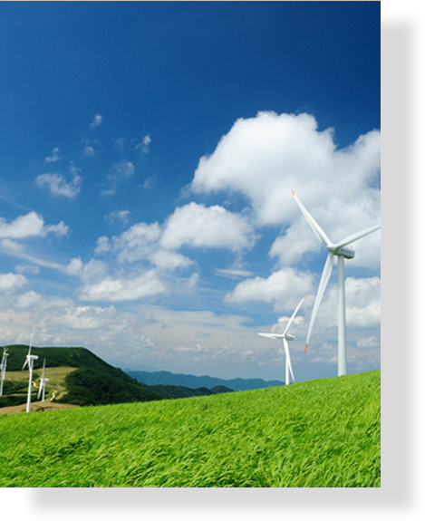
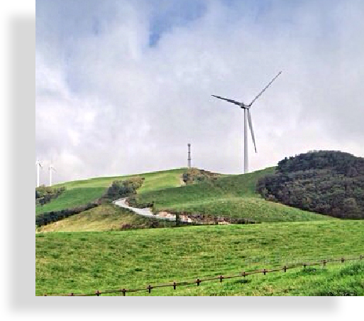
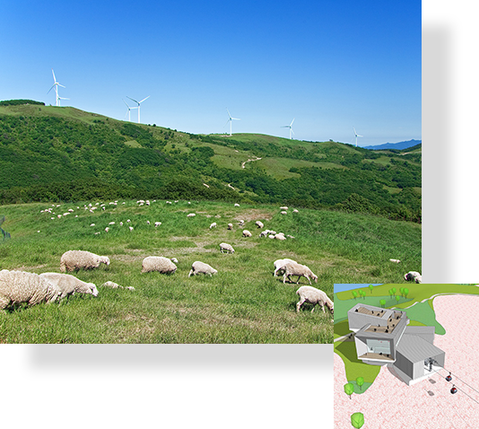
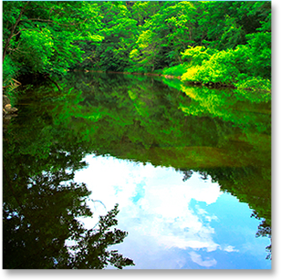
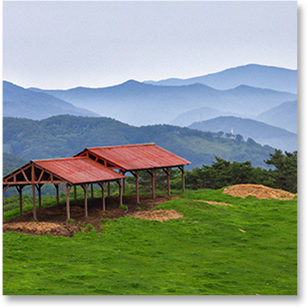
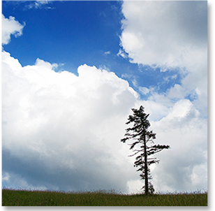
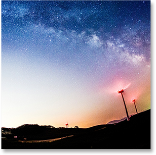

- 삼양패밀리
- 삼양식품의 관계·계열사를 소개합니다

SPRING
대관령 일대에 동양최대의
600만평의 초지목장
SUMMER
대관령에서 바라보는
해발 1,140m
AUTUMN
최고의 가을경치를
볼수있는 광활한 목장
WINTER
운치를 더하는 최고의
영화촬영지
에코그린캠퍼스
대관령삼양목장
- 
- 동양최대의600만평의 초지목장
- 강원도 평창군 대관령면 일대에 동양최대의 600만평의 초지목장,
이름하여 에코그린캠퍼스-대관령삼양목장은 1972년 한국 축산업계 역사에 한 획을
그으며 출발했습니다.
축산업을 통해 대자연의 생명력을 식품산업 속에서 활성화시키려는 삼양축산의
개척정신이 밑받침이 되어 해발 850 ~ 1,140m의 높은 지대인 6백만 평의 광활한
초원에서 600 두의 육우와 젖소를 사육하고 있습니다.
대관령삼양목장은 총 면적 600만평으로 서울 여의도의 7.5배이고 우리나라 전체
면적의 1/5,000의 규모입니다.
- 
- EcoGreen Campus
- 1년..2년… 하늘을 가리던 참나무 숲이 초지로 재탄생하기 까지
10년의 시간이.. 또 축산의 터를 닦기까지 몇 년이..
오랜 노력과 기다림을 통해 현재의 대관령 삼양목장이 완성되었습니다
- 
- 대관령삼양목장의 현황 & Vision
- 대관령삼양목장은 양 방목지, 소 방목지, 타조 사육지, 연애소설나무 쉼터, 다양한 경관을
보며 산책할 수 있는 목책로 5개 구간을 비롯해 곳곳에 풍력발전기가 즐비하게 늘어서
있습니다. 대관령삼양목장은 국내에서 가장 가보고 싶은 관광명소로 알려져 있으며, 광활한
자연과 이국적 풍광을 관람하기 위해 매년 많은 관광객이 방문하고 있습니다.
또한 드라마, 영화, CF 촬영지 등으로 알려져 해외에서도 많은 관심을 받고 있으며, 축산을 베이스로 한 제조, 관광, 교육의 6차 산업화를 진행 중에 있습니다.
대관령 삼양목장은 2018년 평창동계올림픽을 맞이하여 곤돌라, 숙박시설, 산악트래킹
등 목장 내 관광자원을 개발 및 발전시킴으로서 국내 산악관광의 명소로 발돋움하고자 합니다.
갤러리&홍보영상
- 
- 
- 
- 
강원도 평창군 대관령면 꽃밭양지길 708-9
TEL: 033) 335-5044~5
FAX: 033) 335-5046
※ 영동 고속도로 → 대관령IC → 횡계시내(우회전) → 횡계초등학교 → 6km 대관령삼양목장
※ 서울(강남기준) → 대관령삼양목장 2시간 30분 소요
※ 강릉 → 대관령삼양목장 30분 소요